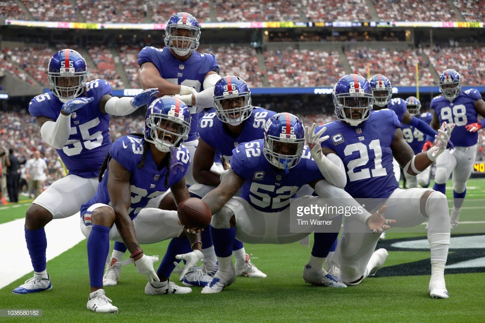

The New York Giants defense can not close out any teams when the offense is up, and they often let the team have to play catch up. Although they are in the top 10 for allowed passing yards they are in the bottom 10 for allowed rushing yards. They play inconsistently, where as one drive they will stop the opposing offense in only three downs, but then the next they will let up a touchdown.
It is not hard to stop an offense if you just follow these simple steps. The Giants though, seem to be uncapable of doing so.